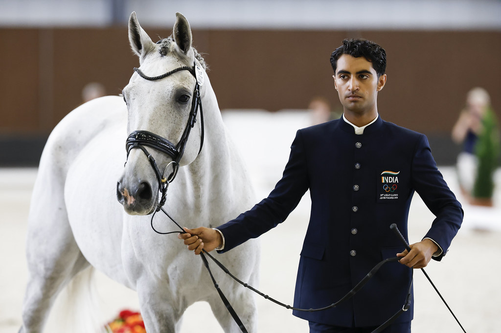

El concurso completo regresa a Tokio con los XX Juegos Asiáticos
La competición ecuestre de los XX Juegos Asiáticos se disputará en septiembre en el Equestrian Park de Tokio, escenario de los Juegos Olímpicos de 1964 y 2020.

Uso editorial autorizado FEI
El concurso completo regresa a Tokio este septiembre con la celebración de los XX Juegos Asiáticos. Un total de 33 binomios de diez naciones diferentes competirán por los honores por equipos e individuales en el Equestrian Park, también conocido como Baji Koen, situado a unos 250 kilómetros de la sede principal de los Juegos en Aichi-Nagoya.
El recinto histórico, inaugurado en 1940, acogió la competición ecuestre en los Juegos Olímpicos de Tokio 1964 y Tokio 2020 antes de su reapertura tras una renovación en 2023. El concurso completo forma parte del programa de los Juegos Asiáticos desde la edición de 1982 celebrada en Nueva Delhi, cuando el deporte ecuestre se incorporó al programa de la cita.
— Redacción de Hípica al Día